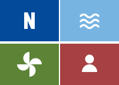
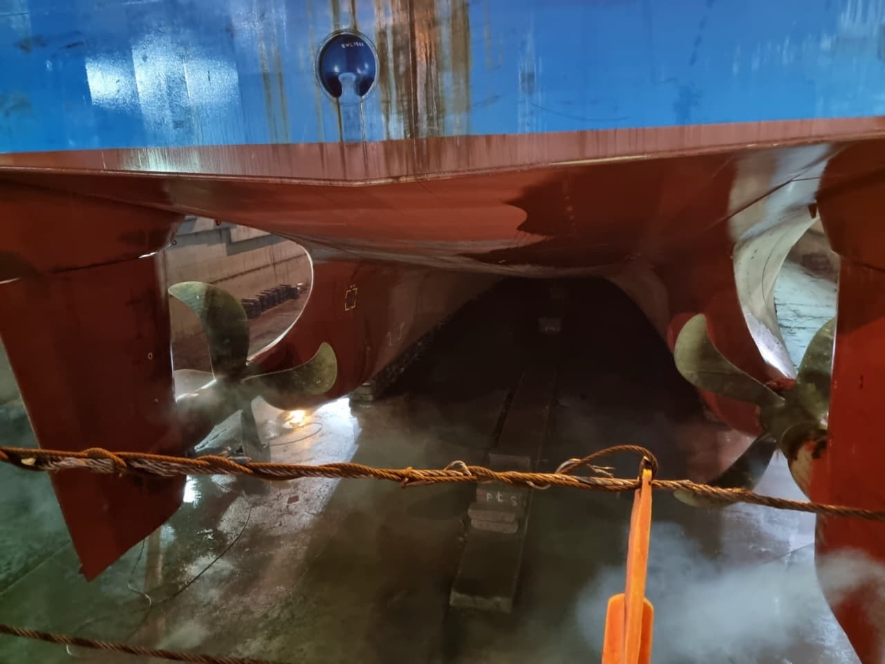
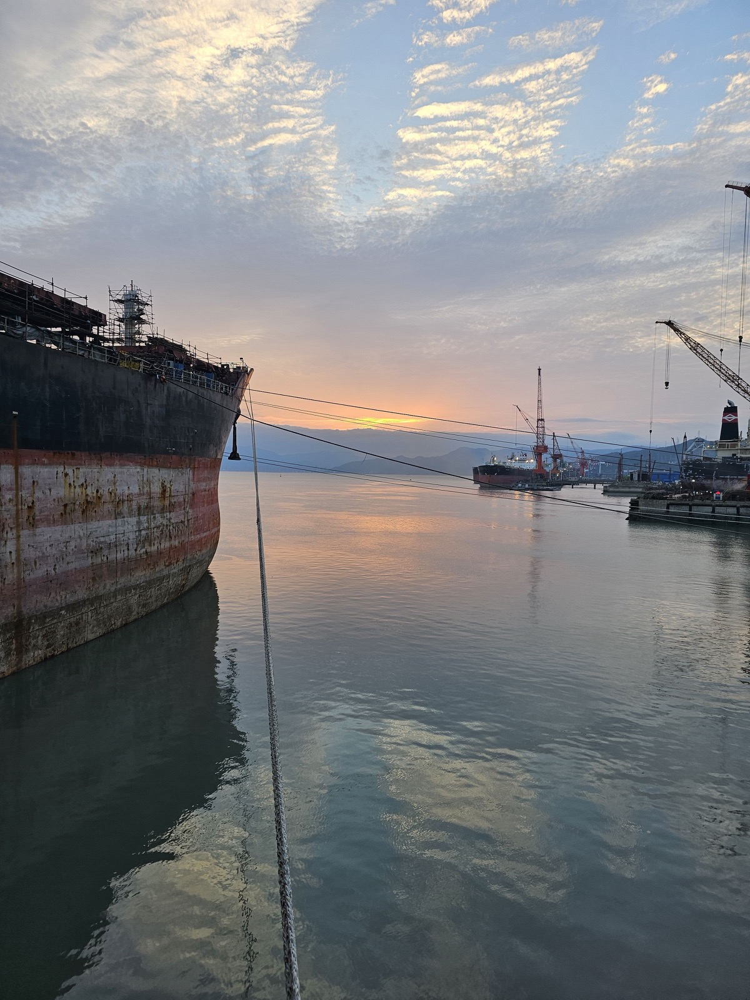

NymaMar identity systemEvery rule on this board is measured from the official mark: four tiles at 10 : 7, held apart by a thin gutter. NymaMar connects the elements, so the gap between them is drawn, never hidden.
Every frame is 10 : 7, turned 7 : 10, or tiles side by side. Square corners only.
Columns sit one unit apart, rows two. The same 1 : 2 runs from icons to page grids.
Compound parts are two tiles and a joint: buttons, fields, captions. The joint closes when you act.
Solids are cut by the gutter: the four glyphs, large figures and the headline type.
Colour names an element and nothing else. Text is ink, the page is white.
Left, the live site today. Right, the same part grown from the mark. Hover, tab to or tap the new buttons: the joint closes.

Third-party technical management services, segments or complete, tailored to fleet size and complexity.
ExploreWe connect the elements. And enable their full potential.
Stack Sans Notch for titles, Stack Sans Text for reading. Its crossbars carry a small cut, the same gutter that cuts the four glyphs. Heavy over light, as the client liked on v3, but with a reason in every letter.

Maritime professionals, Athens, Greece
A team of active and diverse maritime professionals, offering a transformative learning journey to marine engineering mastering and ocean stewardship for the next generation.
Maritime professionals, Athens, Greece
Phone, 390 wide
Business card, front. The card itself is 10 : 7 (90 × 63 mm).
Name Surname
Role
Back. The navy tile is notched into the corner, one joint from the edge.
Either in office or onboard.
On nautical charts, whatever lies below the waterline is lettered in italic, everything above it upright. Newsreader keeps that rule: the office upright, the sea in italic. Akt for reading.
Maritime professionals, Athens, Greece
A team of active and diverse maritime professionals, offering a transformative learning journey to marine engineering mastering and ocean stewardship for the next generation.
Notch grows from the mark itself, so the type, the buttons, the frames and the icons all share one cut. Chart has a good story, but a serif pulls the brand towards a publication rather than a team of engineers.